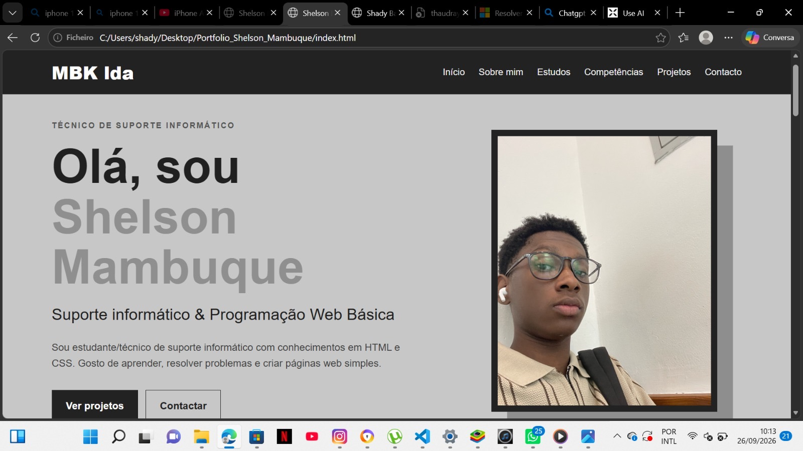
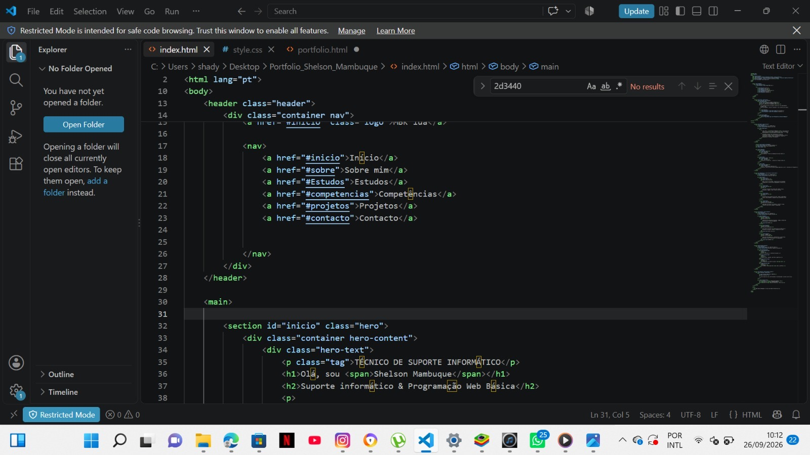
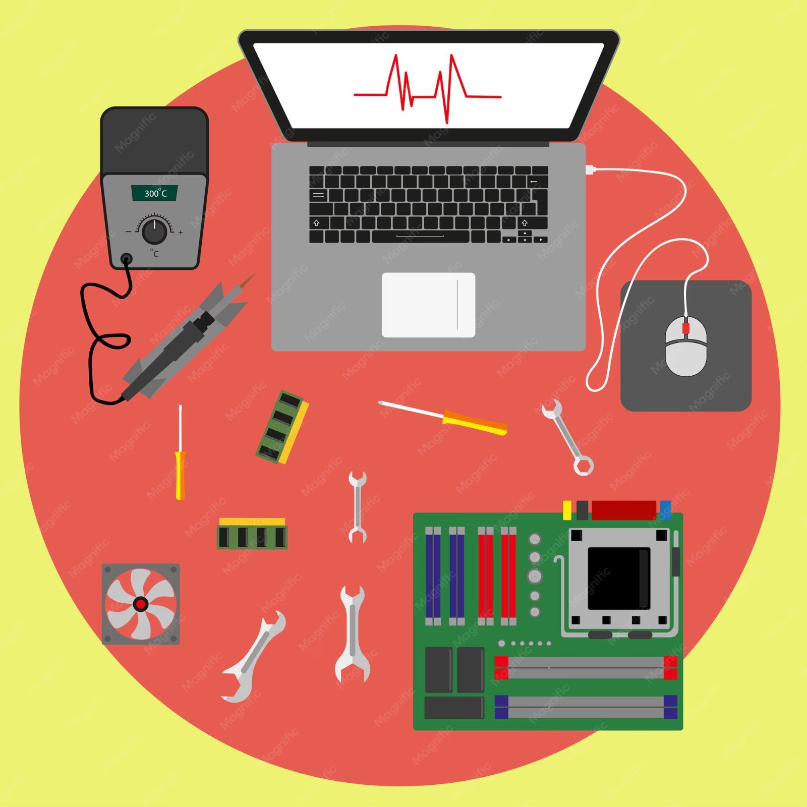

01
Suporte Informático
Apoio básico ao utilizador, identificação de problemas, configuração e utilização de equipamentos informáticos.
TÉCNICO DE SUPORTE INFORMÁTICO
Sou estudante/técnico de suporte informático com conhecimentos em HTML e CSS. Gosto de aprender, resolver problemas e criar páginas web simples.
01 — SOBRE MIM
O meu nome é Shelson Mambuque. Sou técnico de suporte informático e tenho interesse pela área de tecnologia, principalmente no desenvolvimento de páginas web.
Atualmente trabalho com conhecimentos básicos de HTML e CSS. No suporte informático, procuro identificar problemas, ajudar utilizadores e manter os equipamentos a funcionar corretamente.
02 — Periodo Academico
Conclusão da 7classe na Nwananga Christian School
Conclui a 8 classe até à 10classe no Colegio Kitabu
Conclui o CV3 do curso de Eletricidade Industrial no ITC - Instituto de Transportes e Comunicações.
03 — COMPETÊNCIAS
Apoio básico ao utilizador, identificação de problemas, configuração e utilização de equipamentos informáticos.
Criação da estrutura de páginas web usando títulos, parágrafos, imagens, links, listas e secções.
Personalização de páginas com cores, fontes, espaçamento, caixas, posicionamento e adaptação para diferentes ecrãs.
Capacidade de analisar um problema, procurar a causa e aplicar uma solução simples e organizada.
04 — PROJETOS

Página web com apresentação pessoal, imagem, informações profissionais e links de navegação.

Este próprio portfólio foi desenvolvido com HTML para a estrutura e CSS para o design e organização visual.

Exercícios de diagnóstico, configuração e resolução de problemas básicos relacionados com computadores.
05 — COMO FOI FEITO
Cria a estrutura e o conteúdo da página.
Define cores, tamanhos, posições e aparência.
A fotografia fica dentro da pasta img.
O ficheiro index.html abre o portfólio.
06 — CONTACTO
Estou disponível para oportunidades de aprendizagem e projetos web básicos.
Email: mambuqueshelson@gmail.com
Telefone: +258873763330
Área: Suporte Informático / Web Básico